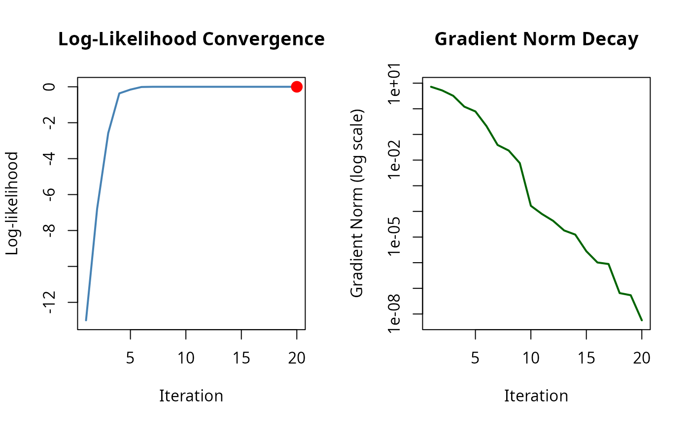

Visualizes the optimization trajectory from an MLE result with tracing enabled. Shows log-likelihood progression, gradient norm decay, and optionally the parameter path (for 2D problems).
Details
This function requires that the solver was run with tracing enabled via
mle_trace(). Without trace data, the function will warn and return
invisibly.
The "path" plot is only shown for 2D parameter problems.
Examples
# \donttest{
# Enable tracing when solving
problem <- mle_problem(
loglike = function(theta) -sum((theta - c(3, 2))^2),
constraint = mle_constraint(support = function(theta) TRUE)
)
trace_cfg <- mle_trace(values = TRUE, gradients = TRUE, path = TRUE)
result <- gradient_ascent(max_iter = 50)(problem, c(0, 0), trace = trace_cfg)
# Plot convergence diagnostics
plot(result)

# }